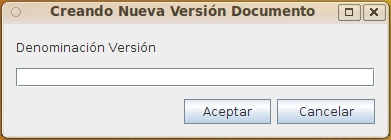

The option CheckIn CONFIRMS all the changes made over a document, deletes the temporal work versions stored for the user in the OPD server and publish the new version as current version.
It's necessary to provide a version's number or version's label that allows to identify the version and retrieve it when browsing the document versions.

Ver: CheckOut (Locks a Document for editing) y Cancel Checkout (Cancels changes in the document)